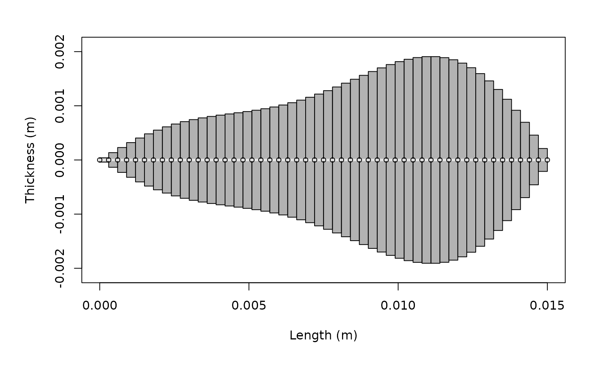

DWBA and SDWBA models for fluid-like scatterers
Brandyn Lucca (https://orcid.org/0000-0003-3145-2969)
dwba_fluid_like_scatterers_vignette.RmdIntroduction
The Distorted-Wave Born Approximation (DWBA) is a widely used theoretical framework for modeling acoustic backscatter from fluid-like organisms such as zooplankton12. The DWBA treats scatterers as weakly-scattering objects with material properties that differ only slightly from the surrounding seawater. This approximation is particularly well-suited for modeling crustacean zooplankton like copepods and krill, which have body densities and sound speeds close to those of seawater.
acousticTS implementation
The acousticTS package provides four DWBA
implementations for fluid-like scatterers:
- DWBA: Standard DWBA for straight-bodied organisms
- DWBA_curved: DWBA for organisms with curved body shapes
- SDWBA: Stochastic DWBA accounting for phase variability in straight bodies
- SDWBA_curved: Stochastic DWBA for curved organisms with phase variability
Both deterministic (DWBA) and stochastic (SDWBA) models are applied
to objects of the FLS (Fluid-Like Scatterer) class, which
can represent various zooplankton shapes from simple cylinders to
complex curved forms.
# Call in package library
library(acousticTS)##
## Attaching package: 'acousticTS'## The following object is masked from 'package:base':
##
## kappa
# Create a simple cylinder shape
cylinder_shape <- cylinder(
length_body = 15e-3, # 15 mm length
radius_body = 2e-3, # 2 mm radius
n_segments = 50 # 50 discrete segments
)
# Create FLS object with the cylinder shape
cylinder_scatterer <- fls_generate(
shape = cylinder_shape,
g_body = 1.058, # Density contrast (ρ_body/ρ_water)
h_body = 1.058, # Sound speed contrast (c_body/c_water)
theta_body = pi/2 # Broadside orientation
)
# Display the object
cylinder_scatterer## FLS-object
## Fluid-like scatterer
## ID: UID
## Body dimensions:
## Length: 0.015 m (n = 50 cylinders)
## Mean radius: 0.002 m
## Max radius: 0.002 m
## Shape parameters:
## Defined shape: Cylinder
## L/a ratio: 7.5
## Taper order:
## Material properties:
## g: 1.058
## h: 1.058
## Body orientation (relative to transducer face/axis): 1.571 radiansUsing the krill dataset
The acousticTS package includes a built-in krill dataset
based on the digitized body shape from McGehee et al. (1998)3, which
provides realistic morphological and material properties for Antarctic
krill:
# Load the krill dataset
data(krill)
# Display basic information about the krill object
krill## FLS-object
## Fluid-like scatterer
## ID: Antarctic Euphausia superba (McGehee et al., 1998)
## Body dimensions:
## Length: 0.041 m (n = 14 cylinders)
## Mean radius: 0.0013 m
## Max radius: 0.002 m
## Shape parameters:
## Defined shape: arbitrary
## L/a ratio: 20.1
## Taper order:
## Material properties:
## g: 1.0357
## h: 1.0279
## Body orientation (relative to transducer face/axis): 1.571 radiansLet’s examine the krill shape:
# Plot the krill shape
plot(krill, type = "shape")DWBA model calculations
Standard DWBA for cylindrical scatterer
The standard DWBA model assumes straight-bodied organisms and is appropriate for simple cylindrical shapes:
# Define frequency vector
frequency <- seq(50e3, 500e3, 10e3) # 50 kHz to 500 kHz
# Calculate TS using standard DWBA
cylinder_scatterer <- target_strength(
object = cylinder_scatterer,
frequency = frequency,
model = "DWBA"
)DWBA models for krill
For the krill dataset, we can apply all four DWBA models to compare their performance. The curved models are more appropriate for krill due to their naturally curved body shape, while the stochastic models account for phase variability:
# Define radius-of-curvature for curved models
krill@body$radius_curvature_ratio <- 3.0
# Apply all DWBA models to krill
krill <- target_strength(
object = krill,
frequency = frequency,
model = c("DWBA", "DWBA_curved", "SDWBA", "SDWBA_curved")
)Visualizing results
Cylindrical scatterer results
# Plot TS for the cylindrical scatterer
plot(cylinder_scatterer, type = "model")Model parameters and sensitivity
Extracting model results
Model results contain detailed information about the scattering calculations:
## frequency ka f_bs sigma_bs TS
## 1 5e+04 0.3104522 0.0001023018 1.046565e-08 -79.80234
## 2 6e+04 0.3725426 0.0001431207 2.048355e-08 -76.88595
## 3 7e+04 0.4346331 0.0001882204 3.542691e-08 -74.50667
## 4 8e+04 0.4967235 0.0002361991 5.578999e-08 -72.53444
## 5 9e+04 0.5588139 0.0002855616 8.154545e-08 -70.88600
## 6 1e+05 0.6209044 0.0003347646 1.120673e-07 -69.50521
# Extract curved DWBA results
dwba_curved_results <- extract(krill, "model")$DWBA_curved
head(dwba_curved_results)## frequency ka f_bs sigma_bs TS
## 1 5e+04 0.3104522 0.0001050585 1.103729e-08 -79.57138
## 2 6e+04 0.3725426 0.0001466901 2.151797e-08 -76.67199
## 3 7e+04 0.4346331 0.0001924496 3.703684e-08 -74.31366
## 4 8e+04 0.4967235 0.0002408010 5.798511e-08 -72.36683
## 5 9e+04 0.5588139 0.0002901058 8.416137e-08 -70.74887
## 6 1e+05 0.6209044 0.0003386728 1.146992e-07 -69.40439The DWBA results include: - frequency: transmit
frequency (Hz) - k_sw: acoustic wavenumber for seawater -
f_bs: complex backscattering amplitude -
sigma_bs: backscattering cross-section (m²) -
TS: target strength (dB re. 1 m²)
Material property effects
Let’s explore how different material properties affect the target strength:
# Create scatterers with different density contrasts
high_contrast <- fls_generate(
shape = cylinder_shape,
g_body = 1.10, # Higher density contrast
h_body = 1.058,
theta_body = pi/2
)
low_contrast <- fls_generate(
shape = cylinder_shape,
g_body = 1.02, # Lower density contrast
h_body = 1.058,
theta_body = pi/2
)
# Calculate TS for both
high_contrast <- target_strength(high_contrast, frequency, "DWBA")
low_contrast <- target_strength(low_contrast, frequency, "DWBA")
# Extract results
ts_high <- extract(high_contrast, "model")$DWBA
ts_low <- extract(low_contrast, "model")$DWBA
ts_original <- extract(cylinder_scatterer, "model")$DWBA
# Plot comparison
par(oma = c(0, 0.25, 0, 0), mar=c(5, 6, 4, 2))
plot(x = ts_original$frequency * 1e-3,
y = ts_original$TS,
type = 'l',
lty = 1,
lwd = 2.5,
xlab = "Frequency (kHz)",
ylab = expression(Target~strength~(dB~re.~1~m^2)),
cex.lab = 1.3,
cex.axis = 1.2,
ylim=c(-95, -50))
lines(x = ts_high$frequency * 1e-3,
y = ts_high$TS,
col = 'darkgoldenrod3',
lty = 1,
lwd = 2.5)
lines(x = ts_low$frequency * 1e-3,
y = ts_low$TS,
col = 'cornflowerblue',
lty = 1,
lwd = 2.5)
legend("bottomright",
c("g = 1.058 (original)", "g = 1.10 (high)", "g = 1.02 (low)"),
lty = c(1, 1, 1),
lwd = c(2.5, 2.5, 2.5),
col = c('black', 'darkgoldenrod3', 'cornflowerblue'),
cex = 1.0)Orientation effects
The DWBA is highly sensitive to the orientation of the scatterer relative to the incident sound wave. Let’s examine this effect:
# Create scatterers at different orientations
broadside <- fls_generate(
shape = cylinder_shape,
g_body = 1.058, h_body = 1.058,
theta_body = pi/2 # 90° - broadside
)
oblique <- fls_generate(
shape = cylinder_shape,
g_body = 1.058, h_body = 1.058,
theta_body = pi/4 # 45° - oblique
)
end_on <- fls_generate(
shape = cylinder_shape,
g_body = 1.058, h_body = 1.058,
theta_body = 0 # 0° - end-on
)
# Calculate TS for all orientations
broadside <- target_strength(broadside, frequency, "DWBA")
oblique <- target_strength(oblique, frequency, "DWBA")
end_on <- target_strength(end_on, frequency, "DWBA")
# Extract results
ts_broadside <- extract(broadside, "model")$DWBA
ts_oblique <- extract(oblique, "model")$DWBA
ts_end_on <- extract(end_on, "model")$DWBA
# Plot orientation comparison
par(oma = c(0, 0.25, 0, 0), mar=c(5, 6, 4, 2))
plot(x = ts_broadside$frequency * 1e-3,
y = ts_broadside$TS,
type = 'l',
lty = 1,
lwd = 2.5,
xlab = "Frequency (kHz)",
ylab = expression(Target~strength~(dB~re.~1~m^2)),
cex.lab = 1.3,
cex.axis = 1.2,
ylim=c(-120, -55))
lines(x = ts_oblique$frequency * 1e-3,
y = ts_oblique$TS,
col = 'darkgoldenrod2',
lty = 1,
lwd = 2.5)
lines(x = ts_end_on$frequency * 1e-3,
y = ts_end_on$TS,
col = 'firebrick3',
lty = 1,
lwd = 2.5)
legend("bottomright",
c("Broadside (90°)", "Oblique (45°)", "End-on (0°)"),
lty = c(1, 1, 1),
lwd = c(2.5, 2.5, 2.5),
col = c('black', 'darkgoldenrod2', 'firebrick3'),
cex = 1.0)Creating custom shapes
The acousticTS package allows for creating custom shapes
beyond simple cylinders. Here’s an example using a polynomial-deformed
cylinder based on Smith et al. (2013)4:
# Create a polynomial deformation vector (example coefficients)
poly_coeffs <- c(0.83, 0.36, -2.10, -1.20, 0.63, 0.82, 0.64) # Smith et al. (2013)
# Create a polynomial-deformed cylinder
poly_shape <- polynomial_cylinder(
length_body = 15e-3,
radius_body = 2e-3,
n_segments = 50,
polynomial = poly_coeffs
)
# Create FLS object with polynomial shape
poly_scatterer <- fls_generate(
shape = poly_shape,
g_body = 1.058,
h_body = 1.058,
radius_curvature_ratio = 3.0,
theta_body = pi/2
)
# Calculate TS
poly_scatterer <- target_strength(
object = poly_scatterer,
frequency = frequency,
model = "DWBA_curved" # Use curved DWBA for deformed shapes
)
# Plot the polynomial-deformed shape
plot(poly_scatterer, type = "shape")
# Compare with regular cylinder
ts_poly <- extract(poly_scatterer, "model")$DWBA_curved
ts_cylinder <- extract(cylinder_scatterer, "model")$DWBA
par(oma = c(0, 0.25, 0, 0), mar=c(5, 6, 4, 2))
plot(x = ts_cylinder$frequency * 1e-3,
y = ts_cylinder$TS,
type = 'l',
lty = 1,
lwd = 2.5,
col = 'cornflowerblue',
xlab = "Frequency (kHz)",
ylab = expression(Target~strength~(dB~re.~1~m^2)),
cex.lab = 1.3,
cex.axis = 1.2,
ylim=c(-100, -55))
lines(x = ts_poly$frequency * 1e-3,
y = ts_poly$TS,
col = 'darkseagreen4',
lty = 2,
lwd = 2.5)
legend("bottomright",
c("Regular cylinder", "Polynomial-deformed cylinder"),
lty = c(1, 2),
lwd = c(2.5, 2.5),
col = c('cornflowerblue', 'darkseagreen4'),
cex = 1.0)Model applications and validity
When to use DWBA vs. DWBA_curved
- DWBA: Best for straight-bodied organisms or when computational speed is important
- DWBA_curved: More accurate for naturally curved organisms like krill, but computationally more intensive
Biological applications
The DWBA models are particularly well-suited for:
- Copepods: Small crustacean zooplankton with approximately cylindrical bodies
- Krill: Larger crustaceans with naturally curved body shapes
- Chaetognaths: Arrow worms with elongated, transparent bodies
- Small fish larvae: When swim bladders are not yet developed
Model limitations
The DWBA has several important limitations:
- Weak scattering assumption: Valid only when material contrasts are small (g, h ≈ 1)
- Single scattering: Does not account for multiple scattering within the organism
- Shape assumptions: Assumes cylindrical segments; complex 3D shapes may require other approaches